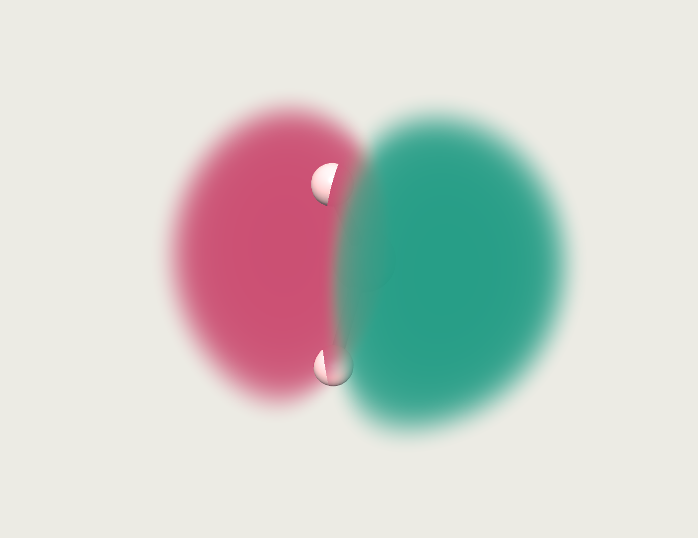
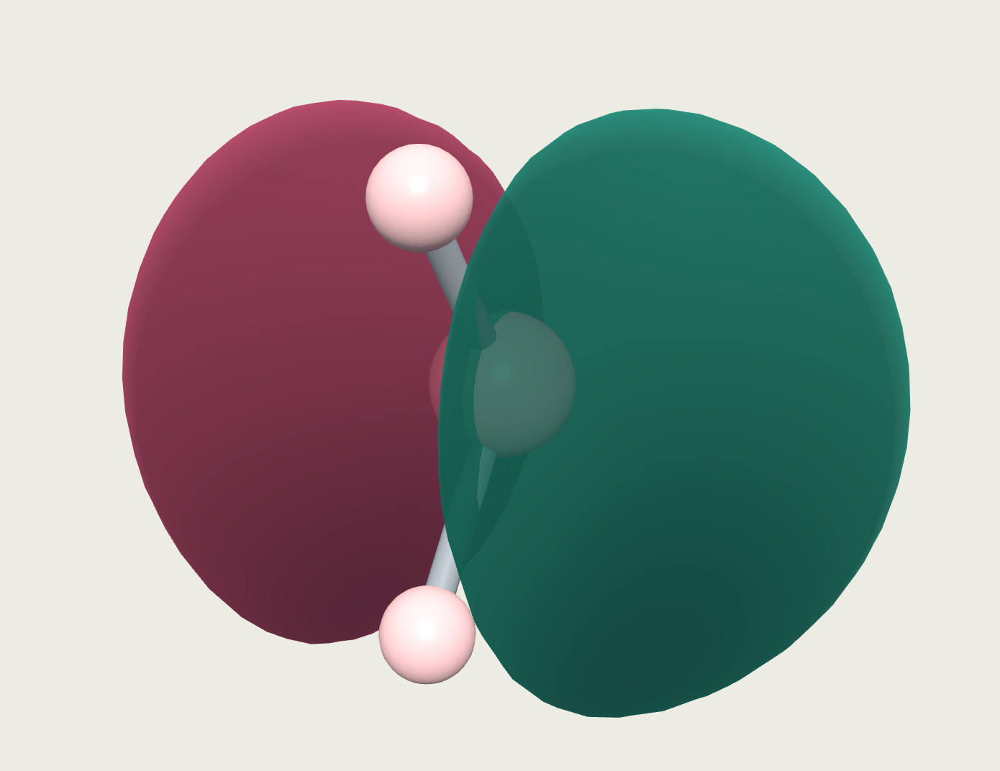

Get ready
Complete Your first molecule and download water.molden. This is a calculated RHF water wavefunction in the cc-pVDZ basis, exported by PySCF. It contains 24 basis functions, 24 spatial orbitals, and a total density derived from the listed occupations. Its test geometry is not an optimized structure.
Outcome: a sampled orbital preview, followed by saved signed mesh geometry that reopens without recalculation.
1. Open and browse the wavefunction
Use Open to choose
water.molden. Check Molecular data for 3 atoms, 2 bonds, and 24 basis functions. Review the import report and Provenance.Under Quantum fields, click Orbitals (24). The browser lists one-based row numbers, labels, spin, occupation, energy in hartree, and saved-mesh counts.
Use Search orbitals to locate
molden-mo-5, or find row 5 in the unfiltered table. This orbital has occupation 2.000 and energy about −0.493063 hartree. The initial active field is this last occupied source-order orbital.Inspect its checkbox, then close the browser with Close orbitals. Checking a row selects it for Generate selected; closing alone does not change the active field. For the preview below, click the corresponding MO 5 (A) field row under Quantum fields → Orbitals if another field is active.
Checkpoint: the file offers 24 orbitals, including zero-occupation virtual orbitals. The Saved column counts meshes in the current document’s memory, not files written to disk. There is one active field for sampled previews.
2. Preview before making a mesh
In Field rendering, set Grid resolution to 96³ and use a positive Isovalue of 0.05 to match the illustrated orbital. Orbital isovalues use bohr−3/2.
Choose Mode → Sampled raycast preview. Wait for sampling to finish. This creates a transient display grid and draws an isosurface from it; it does not create saved mesh triangles.
Choose Volume preview. It reuses the current sampled grid. Set Sampling quality → Fine to match the illustrated view, or use Standard if navigation is slow. This changes display sampling along the ray without recalculating the scientific grid.
Rotate the scene and use Fit scene. Under Appearance, adjust positive/negative colors or opacity if you wish. The colors identify the signs of the orbital value, not positive and negative charge.

Checkpoint: the sampled field is visible while the saved-surface count is still zero. Increasing Sampling quality cannot recover detail absent from the calculation grid.
3. Generate signed surfaces
Open Orbitals (24) again. Use Clear orbital selection, find row 5, and check only that orbital. Confirm a positive Isovalue of 0.05 and Grid resolution of 96³.
Click Generate selected. The browser closes. Wait for the footer’s completed result after sampling, meshing, and validation. The app attempts both positive and negative isovalues; only nonempty surfaces are added. The completed preview grid can be reused when field and resolution are unchanged.
On success, the view switches to Isosurface mesh. Inspect the entries and triangle counts under Saved surfaces. Use an eye control to hide and show one signed mesh. Click a mesh to inspect its label and triangle count.

For another isovalue, change the magnitude and generate again. This replaces that orbital’s meshes; changing the control alone leaves existing meshes unchanged. Save separate documents to retain different isovalues of the same orbital. To generate several orbitals later, check at most 32 per batch; this makes separate orbital meshes.
4. Save and reopen
Click Save and choose a new filename such as
water-orbital.eigenvista. Finish the save, then reopen that file with Open.Check the basis/orbital counts and Saved surfaces. The document opens in mesh mode with its saved triangles available immediately, without the original Molden file or a new orbital calculation.
Select the desired orbital and choose a sampled mode to prepare its preview again. The transient sampled grid, camera, active render mode, Sampling quality, and orbital checkboxes are not stored in the file.
If something differs
If Generate selected is disabled, check one orbital and a finite positive isovalue. Clear a search filter if you cannot find a row; filtering does not clear checks outside the visible list. If a surface is empty, reduce the isovalue magnitude or try another field. If sampling is slow, use a lower resolution; Cancel keeps prior completed surfaces and the last completed preview.
Next, try the Occupation-derived total density (listed orbitals) field under Density matrices. Its nonnegative values may produce only a positive surface. Read the field reference, or continue with a field already sampled in a cube file.